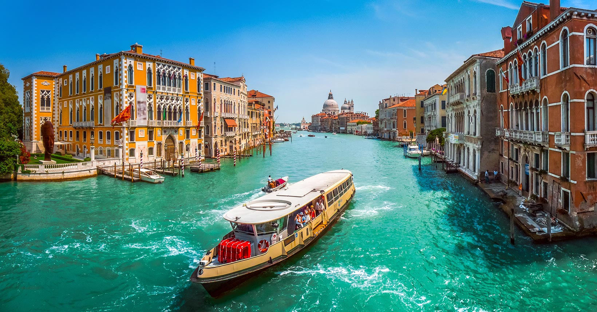
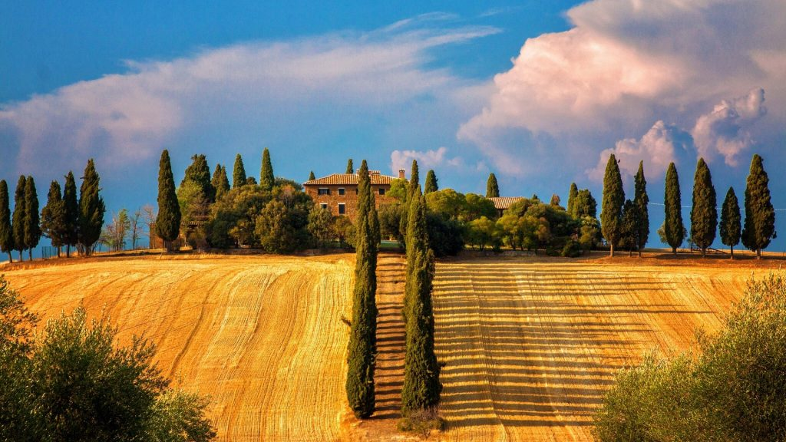

Enzo Casares
Turma
2°H
Disciplina
DevOps
Destino escolhido
Itália, Europa
Por que a Itália?
A Itália é o berço da civilização ocidental, onde cada cidade respira história e cada esquina guarda uma obra de arte
🏛️ História Viva: Do grandioso Império Romano ao esplendor do Renascimento, a Itália preserva monumentos que mudaram o curso da humanidade.
🍕 Gastronomia Incomparável: Pizza napolitana autêntica, massas artesanais, gelato cremoso e vinhos premiados - a culinária italiana é patrimônio da humanidade.
🎨 Arte e Cultura: Obras-primas de Michelangelo, Leonardo da Vinci, Rafael e Caravaggio em museus, igrejas e palácios espetaculares.
🏔️ Paisagens Deslumbrantes: Dos picos nevados dos Alpes às praias paradisíacas da Costa Amalfitana, passando pelos campos dourados da Toscana.

Galeria de Imagens

Veneza - A Cidade Flutuante

Toscana - Campos Dourados
Principais Destinos
- Roma: A Cidade Eterna abriga o majestoso Coliseu, o Fórum Romano, a Fontana di Trevi e a impressionante Cidade do Vaticano.
- Veneza: A cidade flutuante encanta com seus canais românticos, gôndolas tradicionais, a Basílica de San Marco e o Palácio Ducal.
- Florença: Coração do Renascimento, com a magnífica Galeria Uffizi, a Catedral de Santa Maria del Fiore e a Ponte Vecchio.
- Milão: Capital mundial da moda, lar da icônica Catedral Duomo, da ópera La Scala e da famosa "Última Ceia" de Da Vinci.
- Costa Amalfitana: Cenários cinematográficos com falésias dramáticas, vilas coloridas como Positano e Ravello, e águas cristalinas.
- Toscana: Campos ondulantes de girassóis, vinhedos premiados, cidades medievais como Siena e San Gimignano.
Curiosidades Fascinantes
- A Itália possui mais Patrimônios Mundiais da UNESCO (58) do que qualquer outro país no planeta.
- O italiano moderno nasceu da obra literária "A Divina Comédia" de Dante Alighieri, escrita no século XIV.
- A famosa Torre de Pisa levou quase 200 anos para ser construída e começou a inclinar ainda durante sua edificação.
- O Vaticano, localizado dentro de Roma, é o menor país independente do mundo com apenas 0,44 km².
- Mais de 70% do território italiano é montanhoso ou coberto por colinas, criando paisagens espetaculares.
- A Itália é o maior produtor de vinho do mundo, com tradição vinícola de mais de 4.000 anos.
- O primeiro banco do mundo moderno foi fundado em Veneza no século XII, revolucionando as finanças globais.
- A fonte de Trevi arrecada aproximadamente 1,5 milhão de euros por ano em moedas jogadas por turistas.